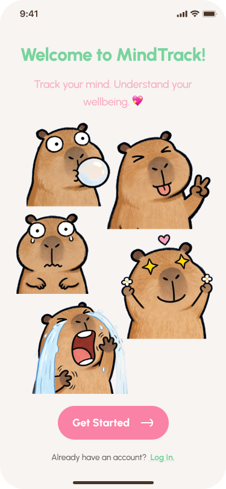
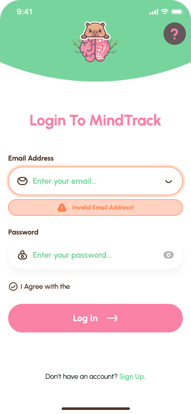
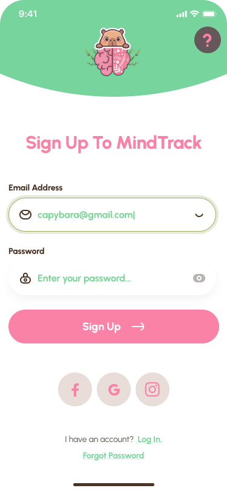
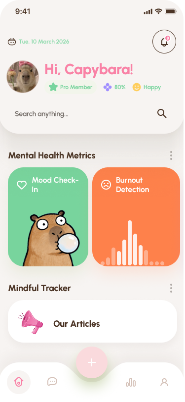
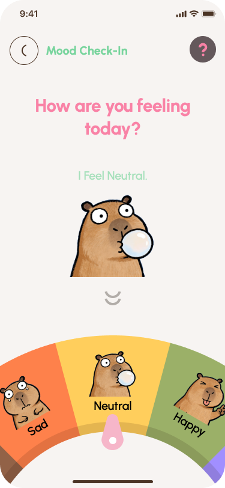
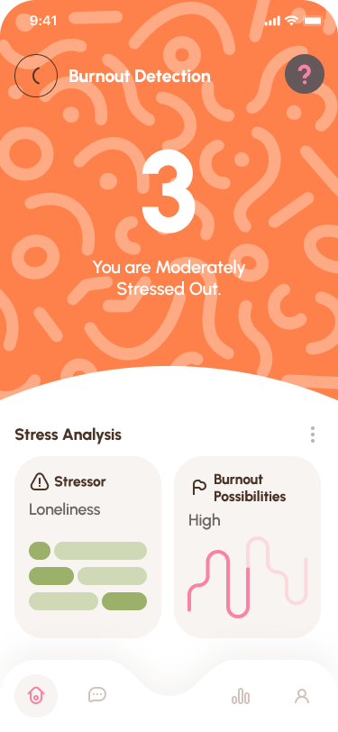
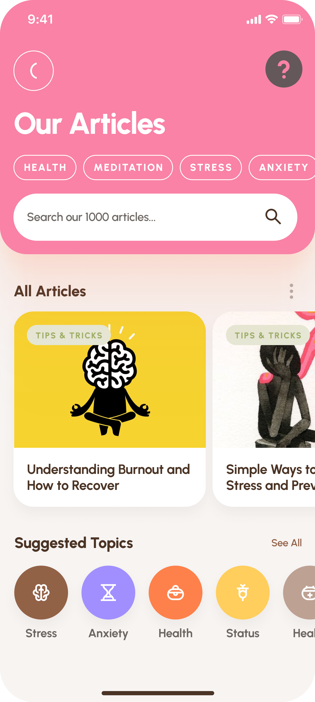
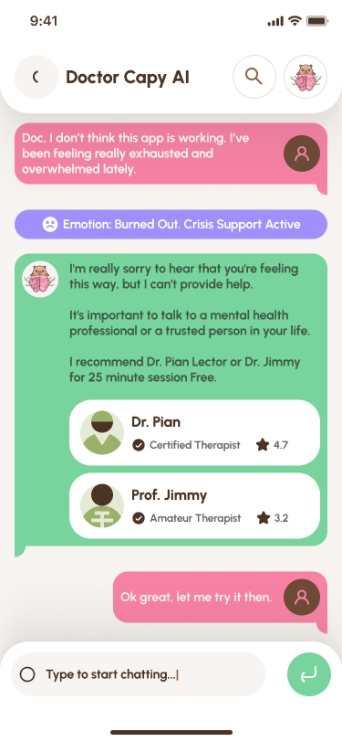
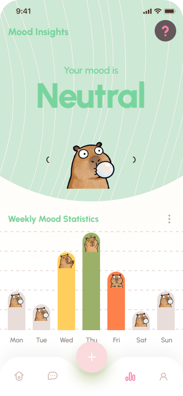
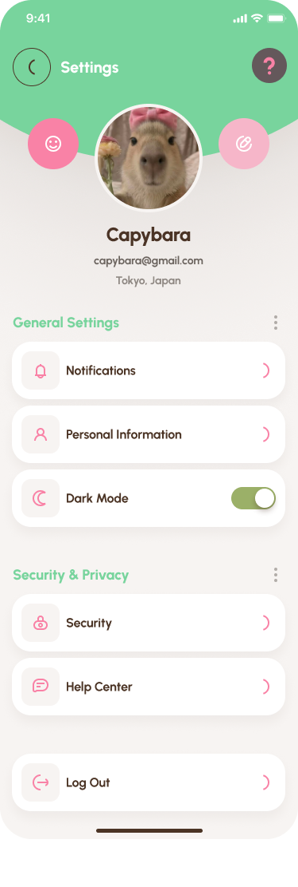

Team Members
Atiqah Syaffia
24007397
Nurfarahin Afifah
24008638
Alfian
22011495
Syed Muhammad
22011248
Introduction
MindTrack is a mobile application designed to support mental health and wellbeing monitoring among university students. The application combines personal sensing data from smartphones with user self-reflection features to analyze behavioral patterns and emotional wellbeing. Users can record their daily mood, write journal entries, upload photos, and log daily activities through simple morning and evening check-ins.
In addition, MindTrack allows users to set personal wellbeing goals such as improving sleep, reducing stress, building healthy habits, or supporting personal growth. The application presents wellbeing insights through a simple and user-friendly interface, including mood calendars, activity logs, and statistical reports.
MindTrack also integrates AI-assisted analysis to summarize users’ daily wellbeing and identify potential stress patterns. The system includes a burnout tracking feature that monitors behavioral changes and emotional patterns to detect early signs of burnout. When potential risks are detected, the application provides personalized recommendations and allows users to connect with professional counselors through an integrated online counseling feature.
Problem Statement
Mental health issues such as stress, anxiety, and burnout are increasingly common among university students and young professionals. Academic pressure, social expectations, and lifestyle changes often contribute to emotional stress and fatigue. However, many individuals fail to recognize early warning signs of mental health decline because monitoring typically depends on occasional self-reflection or professional consultation.
Existing mental health applications often focus only on mood logging or meditation activities and do not provide a comprehensive system that integrates behavioral monitoring, emotional reflection, and goal-based wellbeing tracking. In addition, some applications require complex interactions that may discourage consistent use.
Therefore, there is a need for a user-friendly personal wellbeing monitoring system that combines behavioral insights, mood tracking, and reflective journaling while providing meaningful feedback and support to help users manage stress and prevent burnout.
Literature Review
Previous studies show that personal sensing technologies can effectively monitor behavioral signals related to mental health. Smartphones are capable of collecting behavioral data such as screen time, sleep patterns, activity levels, and phone usage habits through built-in sensors and system analytics. These behavioral indicators can provide insights into users’ wellbeing and daily lifestyle patterns.
Research in Human Computer Interaction also highlights the importance of usability and emotional design when developing mental health applications. Interfaces must be simple, supportive, and non-intrusive in order to encourage continuous engagement and build user trust. In addition, reflective tools such as mood tracking and digital journaling have been shown to help users become more aware of their emotional states and behavioral habits.
Proposed System
MindTrack is designed as a mobile application that integrates personal sensing technology, mood tracking, and reflective journaling to support mental wellbeing monitoring. The system allows users to perform daily check-ins where they record their mood, log daily activities, write journal reflections, and optionally upload photos to capture important moments of their day.
The application also enables users to set personal wellbeing goals such as improving sleep, building healthy habits, reducing stress, or supporting personal growth. MindTrack organizes these records through an interactive calendar and statistical dashboard, allowing users to visualize mood trends, activity patterns, and overall wellbeing progress.
To enhance user support, MindTrack uses AI-assisted analysis to generate daily summaries and identify behavioral patterns that may indicate increased stress or potential burnout. Weekly reports provide insights into mood trends, activity correlations, and goal progress. When signs of burnout or excessive stress are detected, the system provides early alerts and personalized recommendations such as relaxation techniques or connecting with professional counselors through the integrated online counseling feature.
Emerging Technologies Used
The proposed system integrates several emerging technologies to support mental health monitoring:
Personal Sensing
Smartphone sensors and usage analytics track behavioral indicators such as activity levels, screen time, and sleep patterns.
AI-Based Pattern Detection
Artificial intelligence techniques analyze mood entries, behavioral data, and journaling patterns to identify potential stress trends and burnout risks.
Data Analytics
User data is processed to generate insights such as mood trends, activity correlations, and weekly wellbeing reports.
Cloud Processing
User data is securely stored and processed in cloud infrastructure to enable real-time insights and cross-device accessibility.
Design Principles Applied
The design of MindTrack follows several Human Computer Interaction principles to ensure usability and positive user experience.
Simplicity
A minimalistic and intuitive interface reduces cognitive load and allows users to quickly record their mood, activities, and reflections.
Consistency
Interface elements maintain consistent layout, icons, and navigation patterns across the application to help users interact with the system easily.
Visibility
Important information such as mood trends, burnout risk levels, and wellbeing insights are clearly displayed through dashboards, calendars, and weekly reports.
Feedback
The system provides clear responses through notifications, reminders, and AI-generated summaries that inform users about their wellbeing status.
User Control
Users can manage their privacy settings, control sensor permissions, and decide whether to share their data with professional counselors.
Storyboard
The storyboard illustrates how users interact with the MindTrack application during their daily routine.
1. The user opens the MindTrack application in the morning.
2. The system prompts the user to log their mood and daily goals.
3. Throughout the day, the system monitors behavioral patterns such as phone usage and activity levels.
4. If stress patterns are detected, the system sends a notification suggesting relaxation activities.
5. At night, the user records reflections through journaling and reviews their daily wellbeing summary.
Prototype Screens
The prototype demonstrates the main interafce of MindTrack. Scroll horizontally to view the complete user journey.










Evaluation Plan
Usability Testing
To evaluate the usability of the system, testing will be conducted with 5–10 participants who are university students.
- Task 1: Log daily mood
- Task 2: Write a journal entry
- Task 3: Review the wellbeing dashboard
- Task 4: View weekly reports
Metrics such as task completion time, user satisfaction, and error frequency will be collected to measure system usability.
Human Capabilities Consideration
- Cognitive: Simple navigation reduces mental workload.
- Physical: Interface elements are large and touch-friendly.
- Emotional: The system uses supportive language to encourage reflection.
Ethical Considerations
- User data is encrypted and securely stored.
- Users must provide consent before data collection.
- Users can control privacy settings and disable sensors.
- The system does not share personal data with third parties.
- Users can permanently delete their account.
Conclusion
MindTrack demonstrates how personal sensing technology and user-centered design can support mental health monitoring.
By combining mood tracking, journaling, behavioral analysis, and wellbeing insights, the system encourages users to become more aware of their emotional patterns and manage stress more effectively.
Demo Video
A demo video will be included to present the prototype flow, key features, and user interaction process of MindTrack.